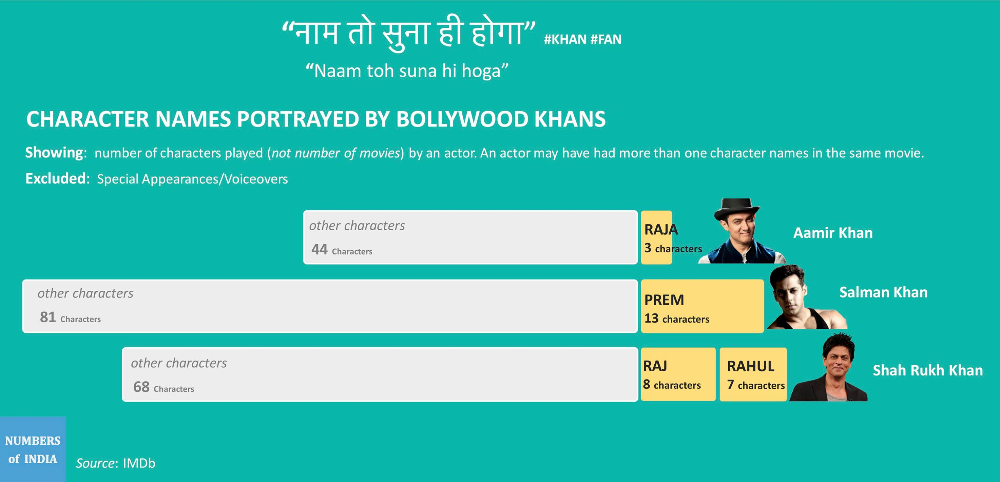

Jabra #FAN of #Bollywood #Khans
Salman Khan has portrayed the character name "Prem" many more times than Shah Rukh Khan has portrayed "Raj" or "Rahul". Aamir Khan brings variety in character names portrayed, just like in his unique characters.
Salman Khan has portrayed the character name "Prem" many more times than Shah Rukh Khan has portrayed "Raj" or "Rahul". Aamir Khan brings variety in character names portrayed, just like in his unique characters.